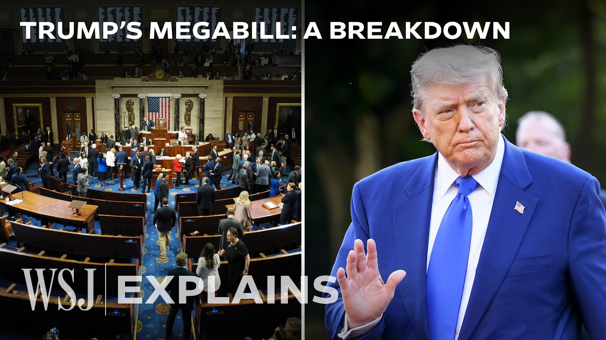

【华尔街日报 20250705 特朗普法案通过：税收与支出更新详解｜附文稿】
Summary: The House passed Trump's major tax and spending bill, extending 2017 tax cuts, adjusting credits, and introducing new deductions, while increasing deficits by $3.4 trillion over a decade.
摘要： 众议院通过了特朗普的重大税收和支出法案，延长了2017年的减税政策，调整了税收抵免，并引入了新的扣除项，同时将在十年内增加3.4万亿美元的赤字。

⏱️ Estimated Reading Time: 10 min
📚 四级生词 📚 六级生词 📚 雅思生词 📚 托福生词 📚 专八生词 📚 SAT生词 📚 考研生词 📚 GRE生词 📚 高考生词 📚 其它生词生词
The motion is adopted. [Applause]
动议通过。[掌声]
The House of Representatives passed President Trump's one big beautiful tax and spending bill.
众议院通过了特朗普总统的一项重大税收和支出法案。
Sort of celebrating like the biggest bill of its kind ever signed and it's going to make this country into a rocket ship.
某种程度上庆祝这是有史以来签署的最大规模法案，并将使这个国家飞速发展。
It's going to be really great.
这将非常棒。
We're going to take you through some of the highlights of this bill.
我们将带您了解该法案的一些亮点。
They extended basically everything that was scheduled to expire as far as the 2017 tax cuts.
他们基本上延长了2017年减税政策中所有原定到期的条款。
Back then, in President Trump's first term, Congress set all these tax cuts to expire at the end of 2025.
此前，在特朗普总统的第一个任期内，国会将这些减税政策设定为2025年底到期。
Republicans really viewed those tax cuts as a huge success, and they made it a priority to remove that expiration date.
共和党人认为这些减税政策非常成功，并将取消到期日作为优先事项。
The child tax credit has been $2,000.
儿童税收抵免此前为2000美元。
This bill will make it $2,200 and index it to inflation.
该法案将其提高到2200美元，并与通胀挂钩。
They increased the exemption for the estate tax to $15 million per person.
他们将遗产税的免税额提高到每人1500万美元。
Republicans really disfavored electric vehicles and clean energy tax credits.
共和党人非常反对电动汽车和清洁能源税收抵免。
Now, anything purchased after September 30th is not eligible for those credits.
现在，9月30日之后购买的任何产品都不符合这些抵免条件。
On clean energy, wind and solar in particular are taking a hit in this bill.
在清洁能源方面，风能和太阳能尤其受到该法案的打击。
They're going to be phased out faster.
它们将被更快地逐步取消。
The state and local tax deduction has been capped at $10,000 since 2017.
自2017年以来，州和地方税收扣除上限为1万美元。
There was a block of Republicans from New York, New Jersey, California in the House who wouldn't vote for this bill without a much higher cap.
众议院中来自纽约、新泽西和加利福尼亚的一批共和党人拒绝在扣除上限大幅提高之前支持该法案。
What they got was $40,000.
他们最终争取到了4万美元的上限。
It's a pretty significant amount.
这是一个相当可观的数额。
That starts phasing down once income reaches $500,000.
一旦收入达到50万美元，扣除额将开始逐步减少。
This bill also includes some new items, particularly ones that President Trump campaigned on last year.
该法案还包括一些新条款，尤其是特朗普总统去年竞选时提出的内容。
One is no tax on tips, up to a $25,000 deduction for tipped workers.
其中之一是对小费免税，服务行业工作者可享受高达2.5万美元的扣除。
Again, you're still going to pay payroll taxes on those similar amounts for overtime paid.
但您仍需为加班费支付工资税。
It's removing income taxes on the sort of half part of time and a half.
它取消了加班费中额外一半部分的所得税。
So, you'd still pay taxes on straight time, but then the additional half increment you wouldn't necessarily pay income tax on.
因此，您仍需为正常工作时间纳税，但额外的加班费部分可能无需缴纳所得税。
You would get a deduction.
您可以享受扣除。
Car loan interest for domestically produced cars.
国产汽车贷款利息可扣除。
You'd be able to deduct thousands of dollars in interest.
您可以扣除数千美元的利息。
The fourth is a deduction for seniors.
第四项是针对老年人的扣除。
So the president talks about this bill being making it so there's no tax on social security.
总统称该法案将免除社会保障税。
That is not in fact the case.
但事实并非如此。
There's an approximation of that, an attempt to do something like that.
这是一个近似方案，试图实现类似效果。
It's a $6,000 per person deduction for people ages 65 and up.
65岁及以上人群每人可享受6000美元的扣除。
Generally, these provisions will all kick in for tax year 2025.
这些条款通常将在2025纳税年度生效。
They are temporary.
它们是临时性的。
They go from 2025 through 2028.
有效期从2025年到2028年。
And we'll see how they go.
我们将观察其实施效果。
We'll see who wins the 2026 and 2028 elections and how eager they are to continue those policies.
我们将看到谁赢得2026年和2028年选举，以及他们延续这些政策的意愿。
Republicans were looking for ways to get more money for their priorities.
共和党人寻求为其优先事项争取更多资金。
So, they were able to say, "Okay, well, we'll just take the agencies we like and favor and that Trump wants more money for ICE, Customs and Border Protection, Homeland Security, the Defense Department, Missile Defense, those kinds of things, and ship building."
因此，他们能够表示：“好吧，我们将为我们喜欢和支持的机构，以及特朗普希望增加资金的机构，如移民海关执法局、海关与边境保护局、国土安全部、国防部、导弹防御系统等，以及造船业争取更多资金。”
and just plus those up and add up several hundred billion dollars that are going to all of those things.
并为所有这些项目增加数千亿美元的资金。
One open question is what happens with the base levels of funding for those agencies, whether Congress, this Congress or future Congresses, particularly if Democrats have some more power, start carving back some of the annual money for those agencies.
一个悬而未决的问题是这些机构的基础资金水平将如何变化，无论是本届国会还是未来的国会，尤其是如果民主党获得更多权力，是否会开始削减这些机构的年度资金。
This dangerous and extreme Republican budget will result in Americans losing their lives.
这项危险且极端的共和党预算将导致美国人丧生。
And then the biggest point of contention is Medicaid, which is the federal state health insurance program largely for low-income people.
最大的争议点是医疗补助计划，这是主要为低收入人群提供的联邦-州医疗保险计划。
One of the things they did is create work requirements.
他们采取的措施之一是设立工作要求。
So able-bodied people will have to start looking for work or having work in order to be able to get Medicaid work requirements.
因此，身体健全的人必须开始寻找工作或已有工作才能获得医疗补助。
Among the biggest single items saving money this bill, that's about $326 billion through 2034.
该法案中节省资金的最大单项之一是通过2034年节省约3260亿美元。
You also see more frequent eligibility checks in Medicaid.
医疗补助计划的资格审核也将更加频繁。
There are also changes to premium tax credits under the Affordable Care Act.
《平价医疗法案》下的保费税收抵免也有所变化。
All those changes will mean that by 2034 11 million people will not have health insurance compared to what would happen if Congress that did nothing here.
所有这些变化意味着，到2034年，与国会不采取任何行动的情况相比，将有1100万人失去医疗保险。
Republicans were concerned about the effect of that on the providers.
共和党人担心这对医疗服务提供者的影响。
And so there's to deal with the changes they created, there's a $50 billion rural healthcare fund.
因此，为应对这些变化，他们设立了500亿美元的农村医疗基金。
This bill represents in the text of this bill the largest and greatest loss of health care in American history.
该法案文本代表了美国历史上最大规模的医疗保健损失。
Democrats have highlighted in this bill is really the contrast between the effects on low-income people who are receiving benefits from Medicaid and nutrition assistance and the tax cuts that go to some extent to tipped workers, but a lot of the money is certainly going to very high income people.
民主党人强调，该法案真正凸显了对接受医疗补助和营养援助的低收入人群的影响与针对服务行业工作者的减税之间的对比，但大部分资金无疑流向了高收入人群。
So, if Democrats win the House majority next year, you may see them try to delay or change those tax cuts.
因此，如果民主党明年赢得众议院多数席位，您可能会看到他们试图推迟或修改这些减税政策。
It's going to add much more to the debt.
这将大幅增加债务。
And so I think without question this is not a fiscally conservative bill.
因此，我认为毫无疑问这不是一项财政保守的法案。
This bill absolutely increases the deficit.
该法案绝对会增加赤字。
The way that Congress looks at this generally is what happens to deficits over the next 10 years through 2034 if compared to a scenario where Congress does nothing.
国会通常的评估方式是，与国会不采取任何行动的情况相比，到2034年的未来10年赤字会发生什么变化。
That's about $3.4 trillion according to the Congressional Budget Office.
根据国会预算办公室的数据，这一数字约为3.4万亿美元。
That's on top of the 21 trillion or so in budget deficits that would happen anyway.
这是在原本就会发生的约21万亿美元预算赤字之上的额外数字。
Republicans have sort of two very different arguments about why they think that's overstated.
共和党人对此有两种截然不同的论点，认为这一数字被高估。
One, and this is coming from the Senate, they say, "Okay, look, let's just assume that the tax cuts were going to be extended anyway, that's 3.8 trillion."
其一，来自参议院的观点认为：“好吧，假设减税政策无论如何都会延长，那就是3.8万亿美元。”
And so really, if you look at it that way, this is reducing deficits by 400 billion.
因此，从这个角度看，这实际上减少了4000亿美元的赤字。
The other way that House Republicans look at it is they say economic growth.
众议院共和党人的另一种观点是经济增长。
They argue that the tax cuts plus other Trump policies, whether it's deregulation, energy production, those kinds of things, are going to speed up economic growth and throw off more tax revenue and therefore pay for a large chunk of this bill.
他们认为，减税加上特朗普的其他政策，如放松管制、能源生产等，将加速经济增长并带来更多税收收入，从而为该法案的大部分内容提供资金。
Economists outside of the White House are very concerned about the drag of budget deficits on the economy and they're worried about higher interest rates and growing pile of debt sort of counteracting that growth effect.
白宫以外的经济学家非常担心预算赤字对经济的拖累，并担心更高的利率和不断增长的债务会抵消这种增长效应。